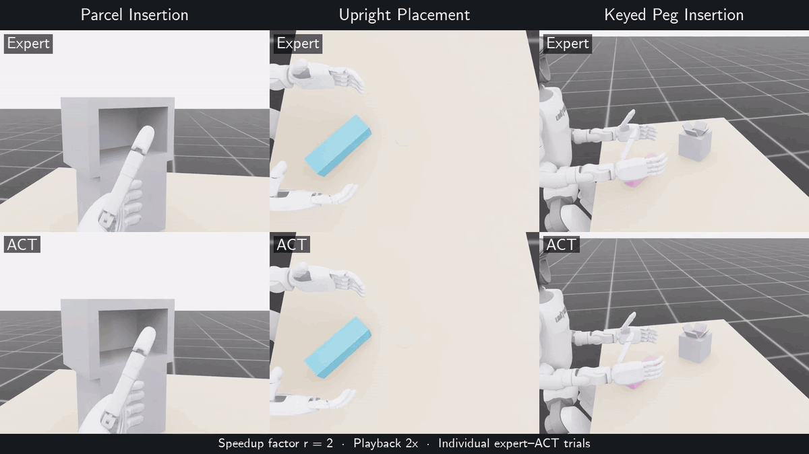

We introduce ParcelStow, an Isaac Lab benchmark for evaluating whether imitation learning preserves expert performance as task execution speed changes. We compare success rates and failure stages for parcel insertion, upright placement, and keyed peg insertion.
We divide the durations of selected manipulation phases by a scalar speedup factor r. At r = 2, we halve those durations while keeping acquisition and settling durations fixed.
ParcelStow with the G1-L6 Humanoid
The fixed-base Unitree G1 humanoid, equipped with a RealHand L6 right hand, acquires and reorients a parcel for insertion into a receptacle, places an elongated object upright within a target region, and inserts a keyed peg into a pocket. We compare scripted experts with policies trained using Action Chunking with Transformers (ACT), Diffusion Policy, and DAgger.
The video compares expert and ACT execution at r = 2. This factor lies within the demonstrated speed range for parcel insertion and beyond it for upright placement and keyed peg insertion. Video playback is accelerated to 2×.


Expert–ACT Comparisons
In the recorded evaluations, ACT matches or exceeds expert nominal task success on all three tasks. At the higher speedup factors shown below, the expert succeeds more often. For parcel insertion, this difference appears within the demonstrated speed range; for upright placement and keyed peg insertion, it appears beyond that range.
Controlled Timing Variation
Vary selected task-phase durations.
Expert–ACT Evaluation
Evaluate both policies on parcel insertion, upright placement, and keyed peg insertion.
Robustness Comparison
Compare task-success counts and expert-minus-ACT differences across speedup factors.
| Task | Nominal r = 1 | Higher r | Success at Higher r | ||
|---|---|---|---|---|---|
| Expert | ACT | Expert | ACT | ||
| Parcel Insertion | 100/100 | 100/100 | 2 | 84/100 | 53/100 |
| Upright Placement | 185/200 | 194/200 | 2 | 105/200 | 24/200 |
| Keyed Peg Insertion | 182/200 | 191/200 | 1.5 | 150/200 | 3/200 |
At the highlighted speedup factors, the expert-minus-ACT success-rate differences are 31 percentage points for parcel insertion, 40.5 for upright placement, and 73.5 for keyed peg insertion. The corresponding pointwise 95% paired bootstrap confidence intervals are [18, 44], [32, 49], and [67.5, 79.5] percentage points. Each task’s main comparison uses one trained ACT policy.
At the higher speedup factors in the table, ACT failures differ by task: insertion misalignment and jamming for parcel insertion, final-pose errors after release for upright placement, and acquisition failures or transport losses for keyed peg insertion.
These evaluations use fixed state-based policies in Isaac Lab simulation. The released evaluation data also include Diffusion Policy and DAgger results. Evaluation data.
Parcel Insertion with the A7-L6 Manipulator
The A7-L6 bimanual robot manipulator executes dexterous parcel insertion in Isaac Lab. We compare expert-controlled and ACT-controlled execution at the nominal task rate, r = 1. The robot completes insertion under expert control but fails the final-orientation criterion under ACT. The task requires both placement inside the receptacle and the specified final object orientation.
Bimanual Assembly through Imitation Learning
The A7-L6 bimanual robot manipulator coordinates housing stabilization with part acquisition, alignment, and insertion in Isaac Lab. The comparison pairs an expert controller with ACT and feedback control. Both trials succeed: assembly takes 54.74 s under expert control and 58.80 s under ACT. During the ACT-controlled execution, the robot’s right arm exhibits brief jerks at the transfer-to-alignment and alignment-to-insertion transitions; these transitions are smooth under expert control in this recording.
Key–Housing Assembly with a Diffusion Policy
The A7-L6 bimanual robot manipulator aligns and inserts the key into the housing using a learned diffusion policy. The three synchronized views visualize a successful simulator replay of recorded policy commands, in which the robot completed assembly at 37.43 s without teacher or repair commands.
Bimanual Box Loading through Behavior Cloning
In this Isaac Sim demonstration, the A7-L6 bimanual robot manipulator coordinates box stabilization with insert grasping, transfer, placement, and release. A policy trained by behavior cloning commands both arms and hands using simulated state observations and elapsed task time.
Use the Benchmark
The G1-L6 benchmark includes 937 successful expert demonstrations and 970,565 control steps across the three tasks. Learned policies in this benchmark use 147-dimensional state observations and share a 16-dimensional joint-position action interface with the scripted experts at 50 Hz.
The released evaluation data contain 23,200 episodes across 136 test conditions. Reproduce success counts and paired bootstrap confidence intervals on a CPU without running the simulator:
git clone https://github.com/coenwerem/parcelstow.git
cd parcelstow
python3 -m pip install numpy
python3 scripts/reproduce_manuscript.py --bootstrap \
--output-dir outputs/reproduce/canonicalUsing ParcelStow?
Citation
@misc{enwerem2026parcelstow,
title = {Does Imitation Learning Preserve Temporal Robustness in
Dexterous Manipulation? An Expert-Learner Comparison
Across Task Execution Speeds},
author = {Enwerem, Clinton and Baras, John S. and Belta, Calin},
year = {2026},
eprint = {2609.01453},
archivePrefix = {arXiv},
primaryClass = {cs.RO},
url = {https://arxiv.org/abs/2609.01453}
}